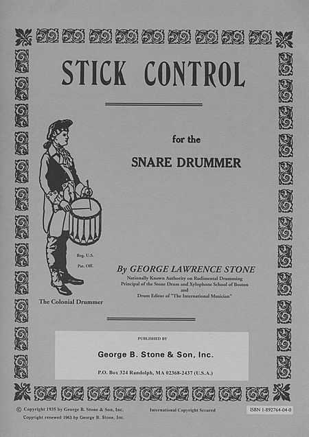
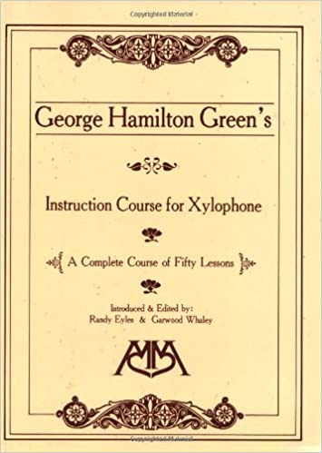

Wrist & Finger Stroke Control - Charley WilcoxonProgressive Steps to Syncopation - Ted ReedStick Control - George Lawrence StoneAccents and Rebounds - George Lawrence StoneMaster Studies - Joe MorelloMethode de Cassie-Claire - Jacques DelecluseThe Roll - Emil SholleGeorge Hamilton Green's Instruction Course for Xylophone
 evel I 101: Method Books
evel I 101: Method Books